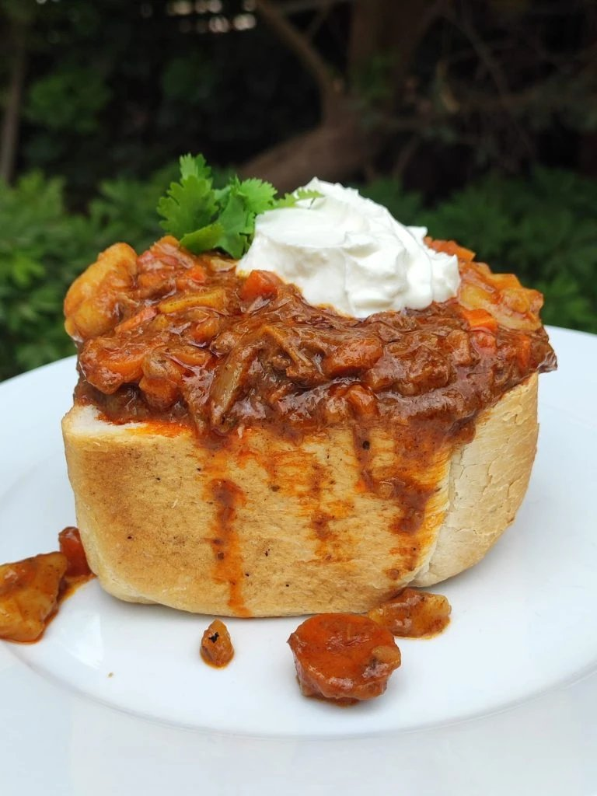
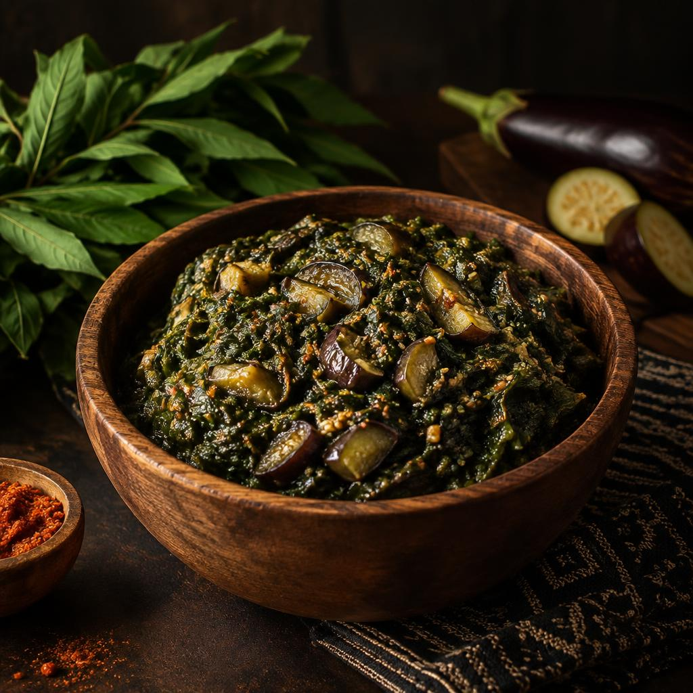

Recipes
Cook the continent
Filter by region, tap the heart to save dishes for later your favorites stay saved on this device.

Nigeria
Jollof Rice
The smoky, tomato-red soul of every West African party.
1h 15m

Morocco
Lamb Tagine
Slow-cooked lamb, apricots and almonds under a clay cone.
2h 30m

Ethiopia
Injera & Wot
A spongy sourdough flatbread that is plate, spoon and meal.
3 days (fermenting)

South Africa
Bunny Chow
Durban curry served in a hollowed loaf of bread.
1h 30m

Rwanda
Isombe
Pounded cassava leaves slow-cooked with eggplant and peanuts.
2h
Nothing here yet — tap Favorite on a dish to save it.